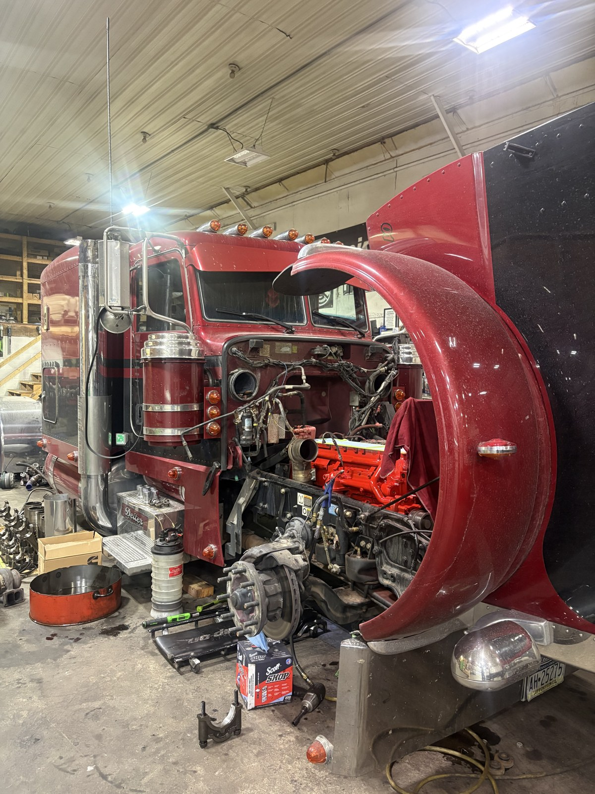
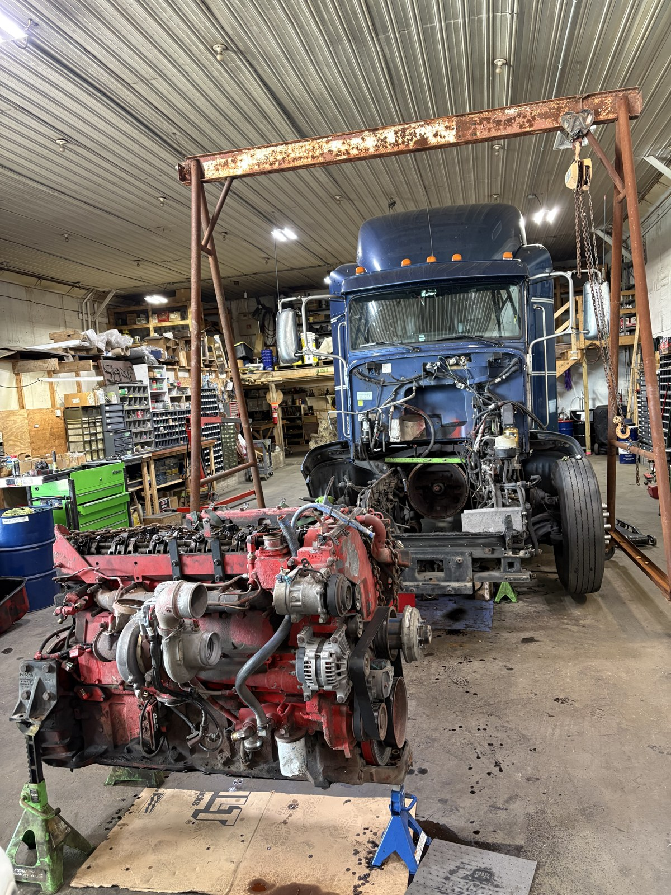
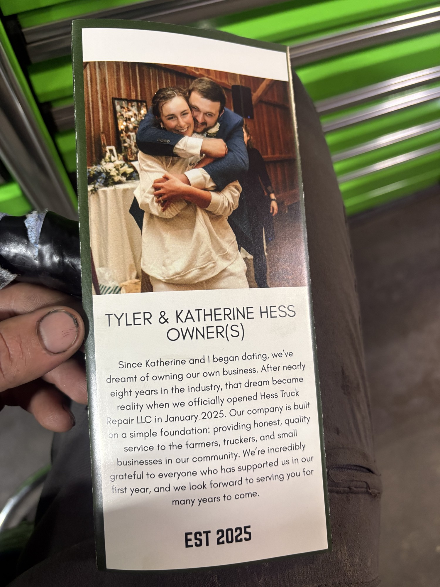

01Engine Rebuilds
Engine Rebuilds
& Overhauls
CAT, Cummins, and Detroit engine repair, rebuilds, and overhauls. OEM and aftermarket parts options to suit your truck and your repair.
Talk through your engine repair
THE HIGHER STANDARD
Honest diesel repair. One-on-one service. Fast turnaround. From engine work to preventive maintenance, we keep Lancaster County’s farmers, truckers, and small businesses moving.
Call (717) 803-9110 for Immediate Diesel ServiceExplore our services01 / WHAT WE DO
From a single owner-operator to an entire fleet. The heavy-duty service you need to keep earning your miles.
CAT, Cummins, and Detroit engine repair, rebuilds, and overhauls. OEM and aftermarket parts options to suit your truck and your repair.
Talk through your engine repair
Electronic diagnostic services to track down warning lights, performance issues, and faults. Clear answers before the next repair.
Get a diagnosisPreventive maintenance for the trucks your farm or business relies on. Plan routine service to help catch problems before they interrupt your work.
Plan your fleet serviceTransmission and driveline repair, plus brake and suspension service. Keep your truck pulling, stopping, and handling the way it should.
Discuss a drivetrain repair02 / INSIDE THE SHOP
Real trucks. Real hands-on repair.
A closer look at the work happening in the Hess Truck Repair service bay.


MEET THE OWNERS
Owning a business was a dream Tyler and Katherine shared from the time they began dating. After nearly eight years in the industry, Tyler and Katherine opened Hess Truck Repair LLC in January 2025.
Their foundation is simple: honest, quality service for the farmers, truckers, and small businesses in their community.
The Higher Standard
03 / DRIVER PERSPECTIVES
From the farms and transport businesses that trust Hess with their trucks.
Being the owner of a farming operation that has many trucks on the road from grain trucks to pickups, Hess Truck Repair has been the shop to keep me going. Fast service, great pricing, and a great attitude! They treat your equipment like it’s theirs and are always happy to get you back up and running no matter how big or small the job, or your location. They are a 5 star shop to my operation.
BHM FARMS
Hess Truck Repair has been prompt & thorough with all of our truck repairs. He’s open & honest about anything he finds. We have used him multiple times with zero complaints. He goes above & beyond, a very trustworthy company, highly recommend.
J L FRITSCH TRANSPORT LLC
04 / LOCAL SERVICE
Serving heavy-duty truck drivers, owner-operators, and fleets throughout Lancaster County, PA and surrounding areas to the south.
Call to confirm service at your location ↗Visit the shopTemporary hours for preview — call to confirm.
Call (717) 803-9110 to check availability and discuss your situation before arranging a tow.
LET’S GET YOU MOVING
For immediate diesel service, call us directly. Tell us what’s happening and we’ll talk through the next step.
Call (717) 803-9110